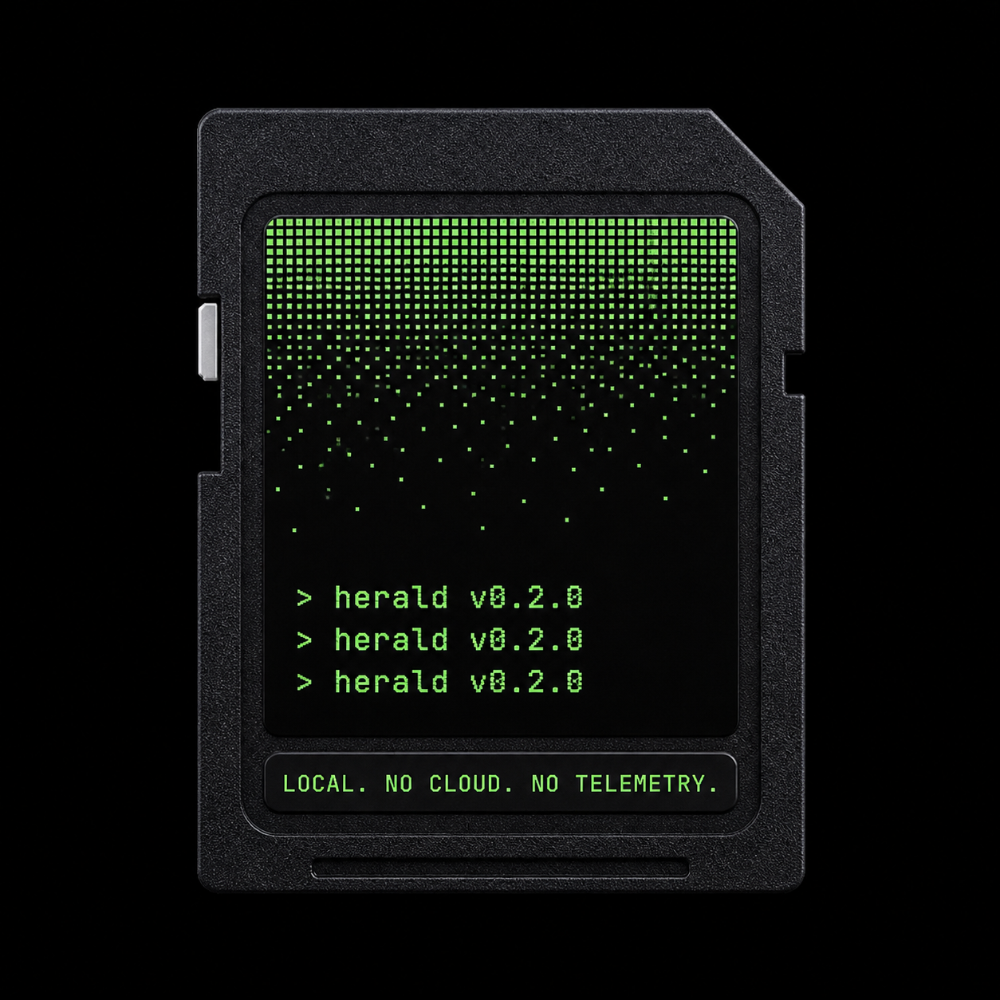

A multi-agent product launch pipeline,
in your terminal.
A drop-in MCP server that runs PM → Research → Brand → UX → GTM with mandatory human checkpoints. One Go binary. Survives crashes. Works in Claude Code, Cursor, VS Code, Copilot CLI.
One brief in, a launch plan out — with humans in the loop.
product_brief.md │ ▼ pm_plan ─────────► output/pm_brief_for_agent1.md │ ▼ run_research ─────► output/01_research.md # web search │ ▼ H1: human approves or iterates run_brand ────────► output/02_brand_messaging.md │ ▼ H2 run_ux ───────► output/03_ux.md │ ▼ H3 run_gtm ──────► output/04_go_to_market.md # 4a + 4b parallel │ ▼ H4 assemble_plan ───► output/final_product_plan.md
Multi-agent workflows, without the framework tax.
It's an MCP server. Works with any client that speaks MCP — Claude Code, Cursor, Windsurf, VS Code, Copilot CLI. No SDK, no glue code.
Four mandatory checkpoints. Approve, iterate with notes, or skip. The agent never finalises a stage without you.
Stage outputs and meta are written to disk after each step. Re-run with the same brief and it picks up where it stopped.
Stdio for local clients, Streamable-HTTP for remote (Claude.ai connectors). Same 8 tools, same code path.
A built-in guard trims agent inputs before they overflow Claude's window. No mysterious 400s mid-pipeline.
Pure Go. ~12 MB. No runtime, no Docker, no Python env. go install or grab a release.
A small, sharp surface area.
herald exposes exactly eight MCP tools. Your client (Claude Code, Cursor, Copilot CLI) sees them as callable functions. No hidden state, no magic.
01_research.md.02_brand_messaging.md.03_ux.md.final_product_plan.md.Five minutes, zero ceremony.
$ curl -L -o herald \ https://github.com/tamish-max/herald-releases/releases/latest/download/herald-darwin-arm64 $ chmod +x herald && sudo mv herald /usr/local/bin/
$ curl -L -o herald \ https://github.com/tamish-max/herald-releases/releases/latest/download/herald-darwin-amd64 $ chmod +x herald && sudo mv herald /usr/local/bin/
$ curl -L -o herald \ https://github.com/tamish-max/herald-releases/releases/latest/download/herald-linux-amd64 $ chmod +x herald && sudo mv herald /usr/local/bin/
PS> iwr -Uri https://github.com/tamish-max/herald-releases/releases/latest/download/herald-windows-amd64.exe ` -OutFile herald.exe # move herald.exe somewhere on your PATH
$ export HERALD_LICENSE='HERALD-...your-key...' # or persist it: $ mkdir -p ~/.herald && \ echo 'HERALD-...' > ~/.herald/license
$ export ANTHROPIC_API_KEY=sk-ant-...
{
"mcpServers": {
"herald": {
"command": "herald",
"env": {
"ANTHROPIC_API_KEY": "${ANTHROPIC_API_KEY}",
"HERALD_LICENSE": "${HERALD_LICENSE}"
}
}
}
}
$ claude // then, in the chat: › use run_workflow with brief_path "./product_brief.md"
I'm looking for ~20 testers to break this in good faith.
What you get · what we want · what we promise
A signed binary for your platform. A 30-day license key emailed to you. A direct line to the maintainer. Your name in the v1.0 credits.
The rough edges. The things that confused you. The moment you nearly closed the tab. Honest, specific feedback — not flattery.
Your data stays on your machine. We never see your prompts, your API key, or your output. License check is fully offline. No phone-home, ever.